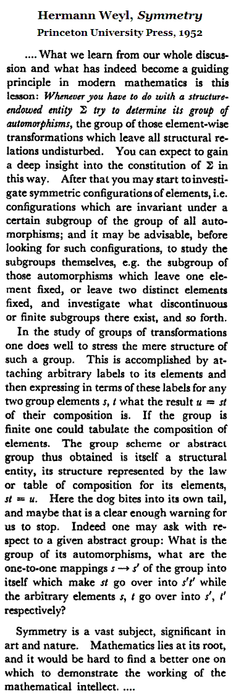
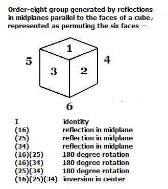
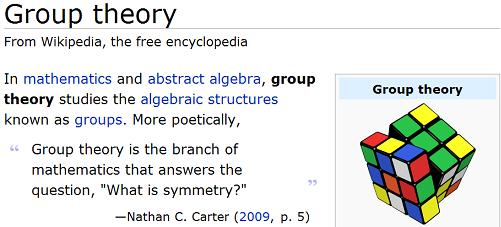

Symmetry, Automorphisms, and
Visual Group Theory
Steven H. Cullinane, March 2, 2010
From the conclusion
of Weyl's Symmetry –

One example of Weyl's "structure-endowed entity" is a partition of a six-element set into three disjoint two-element sets– for instance, the partition of the six faces of a cube into three pairs of opposite faces.
The automorphism group of this faces-partition contains an order-8 subgroup that is isomorphic to the abstract group C2×C2×C2 of order eight--

The action of Klein's simple group of order 168 on the Cayley diagram of C2×C2×C2 in the following note on Carter's 2009 book Visual Group Theory furnishes an example of Weyl's statement that
"… one may ask with respect to a given abstract group: What is the group of its automorphisms…?"
|
Visual Group Theory
Note of March 2, 2010 The current article on group theory at Wikipedia has a Rubik's Cube as its logo– 
The article quotes Nathan C. Carter on the question "What is symmetry?" This naturally suggests the question "Who is Nathan C. Carter?" A search for the answer yields the following set of images… Click image for some historical background. Carter turns out to be a mathematics professor at Bentley University. His logo– an eightfold-cube labeling (in the guise of a Cayley graph)– is in much better taste than Wikipedia's. |
{kind=link}